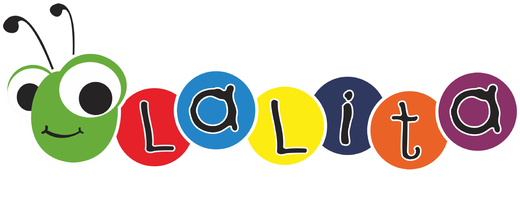
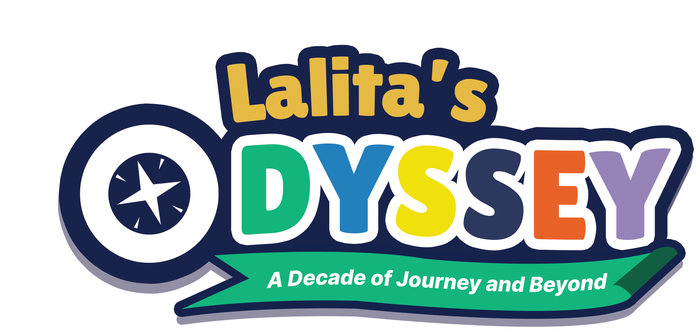
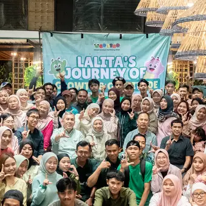
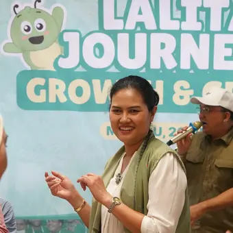
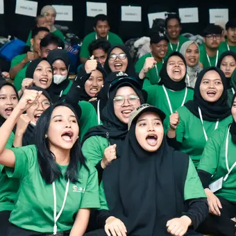
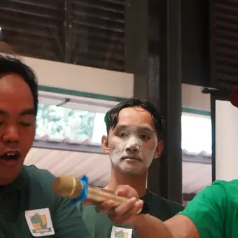
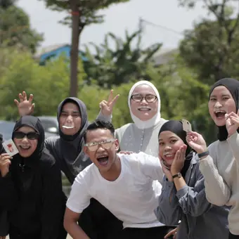
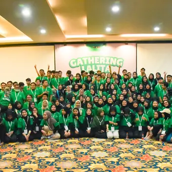
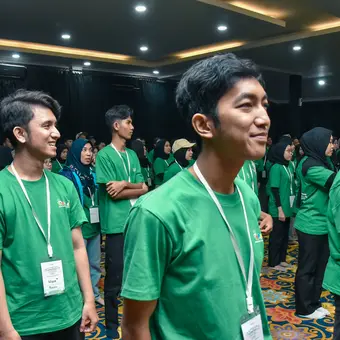
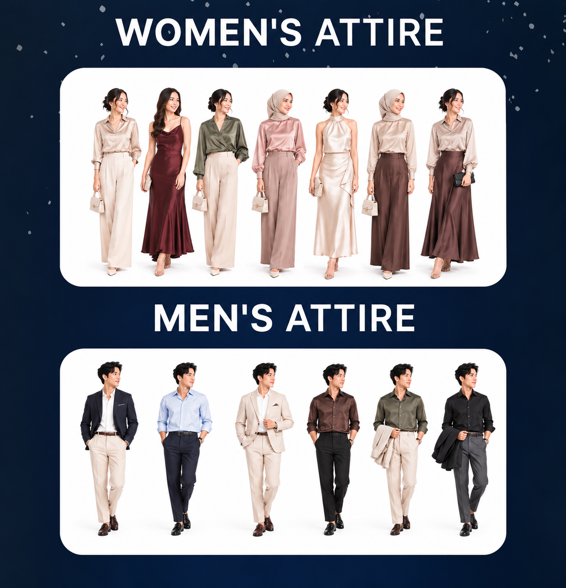

Invitation
Lalita’s Odyssey · 10 Years

Invitation
Kepada Yth.
Dengan hormat,
Dalam rangka merayakan perjalanan satu dekade Klinik Lalita, kami dengan penuh sukacita mengundang Bapak/Ibu untuk hadir dalam acara:
Gala Dinner – Lalita’s Odyssey: 10 YearsA Decade of Journey and Beyond
Kehadiran Bapak/Ibu akan menjadi kehormatan dan kebahagiaan tersendiri bagi kami. Kami menantikan kehadiran Bapak/Ibu untuk merayakan perjalanan, kolaborasi, dan berbagai pencapaian yang telah kita lalui bersama.
Kami mengharapkan seluruh tamu undangan dapat hadir tepat waktu sesuai jadwal yang telah ditentukan agar seluruh rangkaian acara dapat berjalan dengan lancar.
Atas perhatian dan kesediaannya, kami ucapkan terima kasih.
Perjalanan Kita
Perjalanan Lalita dimulai dari satu klinik di Bekasi. Seiring meningkatnya kebutuhan keluarga terhadap layanan tumbuh kembang anak, Lalita secara bertahap memperluas jangkauan melalui pembukaan klinik baru dan kolaborasi strategis.

2016Awal perjalanan Lalita dalam menghadirkan layanan tumbuh kembang anak
Klinik Lalita Bekasi
2019Ekspansi pertama Lalita untuk menjangkau keluarga di wilayah Tangerang dan sekitarnya
Klinik Lalita Alam Sutera
2022Perluasan jaringan layanan ke area Cibubur dan sekitarnya
Klinik Lalita Cibubur
2024Memperkuat kehadiran Lalita di wilayah Jakarta Pusat
Klinik Lalita Cempaka Putih
2026Langkah ekspansi Lalita di luar Jabodetabek untuk menjangkau lebih banyak keluarga
Klinik Lalita Lampung
2026Kolaborasi strategis bersama RS Karya Medika dalam pengembangan layanan tumbuh kembang anak
AB Clinic Cikarang (Strategic Partner)
2026Pengembangan jaringan Lalita di Jakarta Selatan dengan konsep layanan yang lebih premium
Klinik Lalita KebayoranLokasi
Lihat LokasiSusunan Acara
Susunan acara dapat berubah sewaktu-waktu.
Gala Dinner Dress Code
Color Palette
Attire Guide
Contoh referensi busana · ketuk untuk memperbesar

RSVP
Mohon konfirmasi paling lambat .
Mengapa konfirmasi penting?
Konfirmasi kehadiran dan jumlah tamu menjadi acuan kami dalam menyediakan tempat duduk serta tiket masuk.
Tiket masuk TMII
Barcode tiket masuk TMII akan kami kirimkan menyusul setelah Bapak/Ibu mengonfirmasi kehadiran.
Butuh bantuan atau ingin mengubah konfirmasi?
Hubungi panitia: Aliya Rozan · 0858 8883 2207
Ucapan & Doa
Sepuluh tahun adalah perjalanan yang penuh cerita, pembelajaran, dan kolaborasi.
Terima kasih telah menjadi bagian dari perjalanan Klinik Lalita.
We look forward to celebrating this special milestone with you.
Gala Dinner – Lalita’s Odyssey: 10 Years